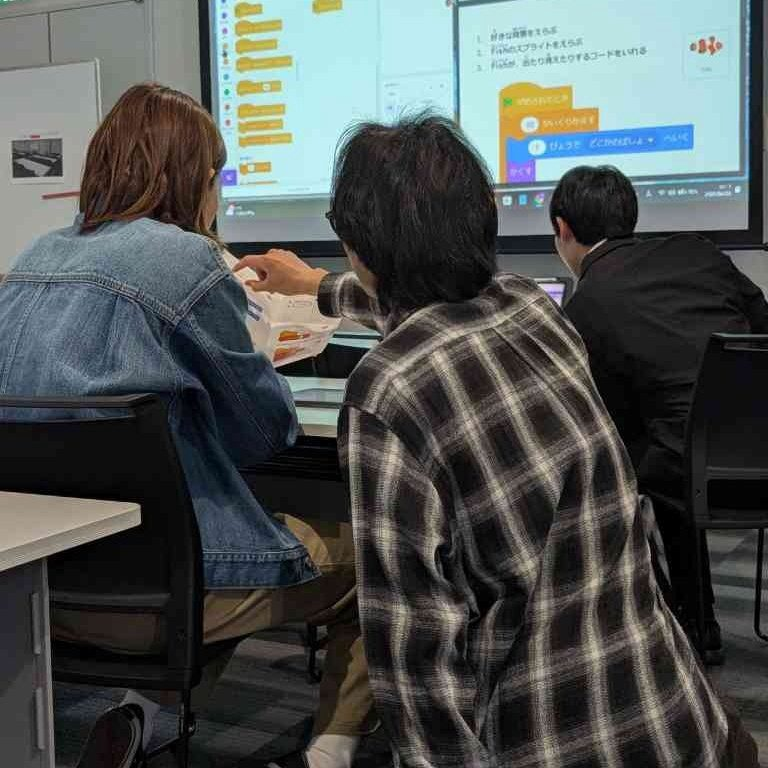
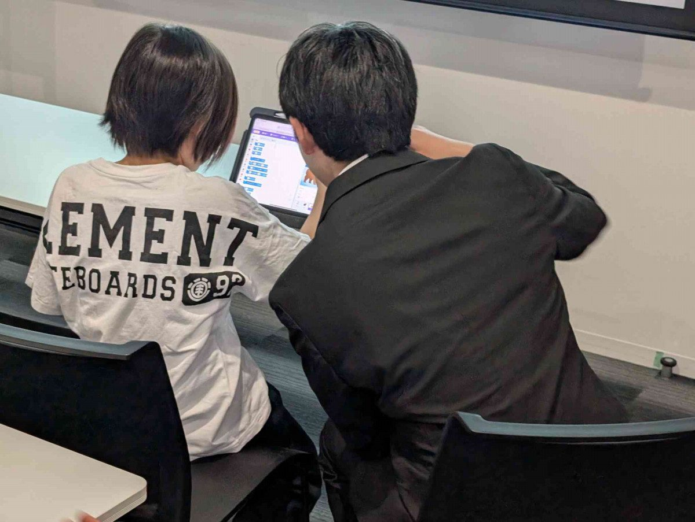

活動報告
2026.06.28
第一回︎︎子どもプログラミング教室
4月26日日曜日！この度、世田谷区教育委員会様からの後援を頂き、三軒茶屋しゃれなあどホール6Fにて、自主教室『第一回 ︎︎子どもプログラミング教室』を開催する事が出来ました。子どもたちのクリエイティビティが爆発してました！教える側もパワーをもらえる素敵な日曜日に感謝。皆さんお疲れ様でした！👏


活動報告
2026.06.28
4月26日日曜日！この度、世田谷区教育委員会様からの後援を頂き、三軒茶屋しゃれなあどホール6Fにて、自主教室『第一回 ︎︎子どもプログラミング教室』を開催する事が出来ました。子どもたちのクリエイティビティが爆発してました！教える側もパワーをもらえる素敵な日曜日に感謝。皆さんお疲れ様でした！👏

